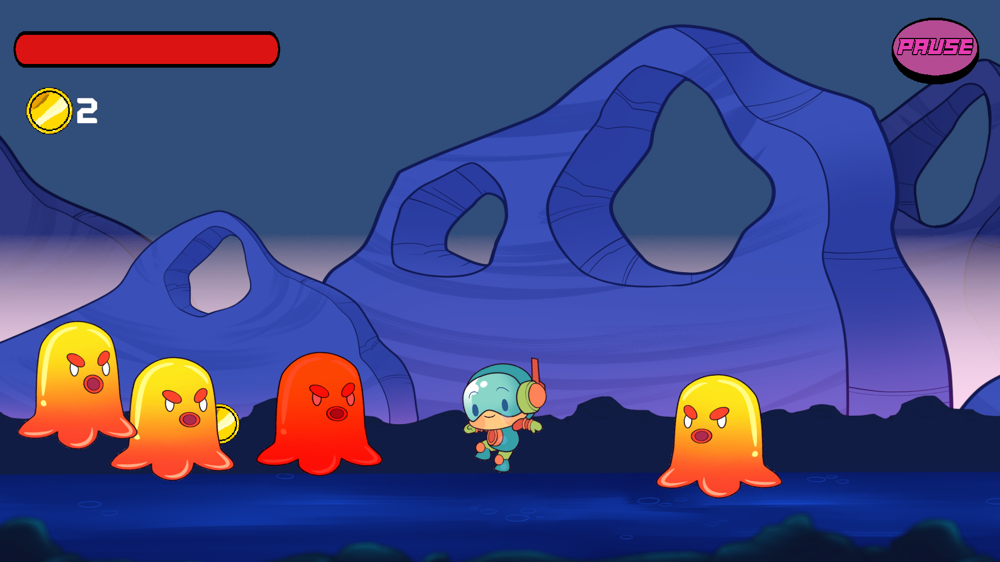

Programming
Gameplay systems, player mechanics, AI, interactions, tools and other technical implementation.

AstroKid2D is an endless 2D shooter that incorporates a lot of unique game mechanics and game design choices. Its development was part of my Unity Engine Course.
01 — OVERVIEW
AstroKid2D is a 2D Endless shooter that was part of my Unity Engine course at EBAC. It was my second project ever made and incorporates simple but extremely important aspects of game development with the Unity Engine, such as prefab management, character movement, physics, animations, collectables, enemies, VFX, scriptable objects and SFX. The game was later updated in August 2026 to incorporate my new art (mainly UI) and sound effects.
AstroKid2D was my first big introduction to the game development world, and though it may be simple, it made me fall in love even more with games as a whole. Also, not having to worry about most of the art used in the project was a big relief, and I am very thankful to the teachers and staff at EBAC for letting me keep and use the art for personal projects.
02 — MY WORK
Gameplay systems, player mechanics, AI, interactions, tools and other technical implementation.
Balancing, player experience and design iteration.
Interface layouts, usability, HUD design, menus and visual communication.
Sound effects, audio feedback and implementation when applicable.
Pixelart used in all the UIs, collectibles and other assets.
Playtesting, bug fixing, iteration and improving the final gameplay experience.
03 — SHOWCASE
04 — MEDIA
05 — DEVELOPMENT
At first the focus was to setup the environment and the art (disponibilized by the school) as I was learning the basics of the Unity Engine, after that, I started working on the core mechanics of the game.
After implementing the core gameplay of AstroKid2D, the focus was to improve the player experience with elements such as collectible coins, more active enemies, score and better UI.
After the core gameplay cycle was implemented, it was time to improve even more the player experience by adding vfx, sfx and add fresher animations and physics.
After everything was polished, I started testing multiple player actions and asked family and friends to playtest my game, as it was my first small-medium-sized project. After a lot of bug-fixing and more testing, I was very content with the state the game was in, and decided to call it finished.
06 — TECHNOLOGY
07 — DEV COMMENTS
This section is for personal development notes, thoughts behind specific design decisions, technical challenges and lessons learned while making the game.
Developing AstroKid2D was a blast, even if at first, it felt really overwhelming because of the amount of information and challenges I was given and had to learn and adapt to. I had a lot of difficulty understanding the concepts of animation, physics and collisions at first, but this project made me understand a lot better, and I think that really shows in my later games.
After the course was over, I decided to make a few different design choices for the game, such as the number of simultaneous enemies and their physics and actions towards the player, the behavior of the coins, and the movement of the player. I concluded that, given the amount of space the player would be able to traverse, a double jump or a faster, teleporting enemy would be too much to handle. That is why I went with simpler enemies and movement options, such as a sprint.
I made the enemies in a way that they are infinitely expandable, so if I decided today that I wanted, for example, a harder enemy, it would be as simple as changing some values and adding a new behavior to a copy of the original prefab. As for the player, I felt like his behavior was sometimes too "stiff" or niche, but I ended up fixing that feeling in the later 3D version of the AstroKid series.
My final conclusion about this game is that, even though it has some flaws and some "beginner" aspects to it, I still think it has an inexplicable charm that I can't quite put my finger on.